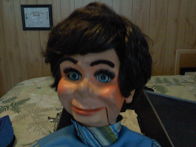

Buford Buckworth
7/12/2012
{kind=link}

Comment and Question: I received Bufford back in '75 for my 13th birthday. I never did do any professional shows but whenever we had company that had kids or later in my life, with my kids and now grand kids, Bufford makes an occasional appearance and makes QUITE an impression. Lately, somehow, the wooden dowel has become loose. I was curious how to remove his hair piece, so I could get into his head try to repair it myself. Thanks for all your mentoring and help with us "youngsters" back in the '70's, too! Take Care, Rodney McVey* * * * *
From Mr. D: It's hard to believe it's been nearly 40 years since Buford passed through my hands - and in looking at his photo now, it seems like just yesterday! Wow! I think a few of my joints have worked loose during the past four decades as well. But his are easier to fix, so let's get to it.
Normally, if Buford has the "ball" base to his neck, I would try to reglue the head post with "gap filling super glue" - being very cautious not to inadvertently glue a string to the head post.
Normally, if Buford has the "ball" base to his neck, I would try to reglue the head post with "gap filling super glue" - being very cautious not to inadvertently glue a string to the head post.
If he has the neck with the open bottom, then it is still a matter of working glue into the area where the parts are loose. I really can't be specific without seeing the figure. Every one is a bit different.
The wig is likely stapled in place. (Maybe glued around the edges.) I take the wig loose beginning at the nape of the neck and working my way upwards until the "door" in the back of the head is exposed. Most of the time it is not necessary to remove the wig completely from the head.